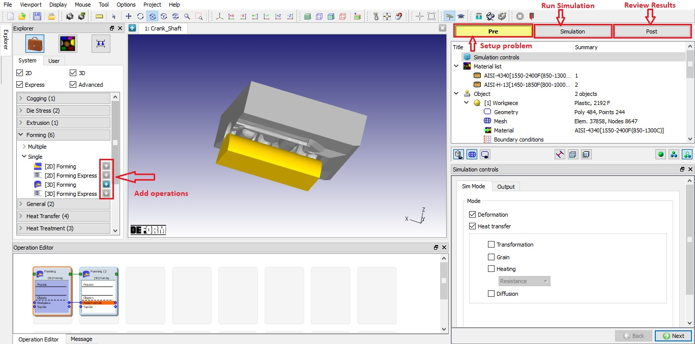

Integrated Manufacturing Process (MO) layout (See Fig. 6.1.) provide user friendly options to Add, Delete, Edit operations and transfer object data between successive operations using feature "Pass object to next operation" or "Pass object to all operations".
Drag and drop facility has been provided for adding operations, material and movement controls. User can navigate top down through the operation tree to setup a problem or can edit setup by directly double clicking the data such as geometry, bcc, simulation controls...etc from the operation tree.
User can navigate to any Pre, Simulation and Post modes which are made available in single window helping user to setup problems, simulate and review results with ease.
User can setup "Forming" operations using "Forming Express" for initial studies and promote to "Forming" operation to include advanced features into the setup.

Integrated Manufacturing Process (MO) Layout
MO also comes with the new customized process modules, DOE for sensitivity study to add variability in processing conditions, material data and boundary conditions and Optimization for process optimization, shape optimization and inverse calculations.
New material models like Bird Mukerji, texture based tabular data flowstress models and Sintering models are added.
Multi-frontal Massively Parallel sparse solver (MUMPS), new CG solver and Explicit solvers are available with MO GUI.
Brick mesh generation feature is available with MO GUI.
Links to Next Gen post and DOE post are provided in post mode to access advanced features for post processing. More post processing features likes coupon data extraction, Region of interest, PIP (Picture in picture) and Report generation are coming with the Next Gen Post.
Related Topics:
6.1. Integrated Manufacturing Process Pre-processor layout
6.2. Integrated Manufacturing Process Simulation layout
6.3. Integrated Manufacturing Process Post-processor layout